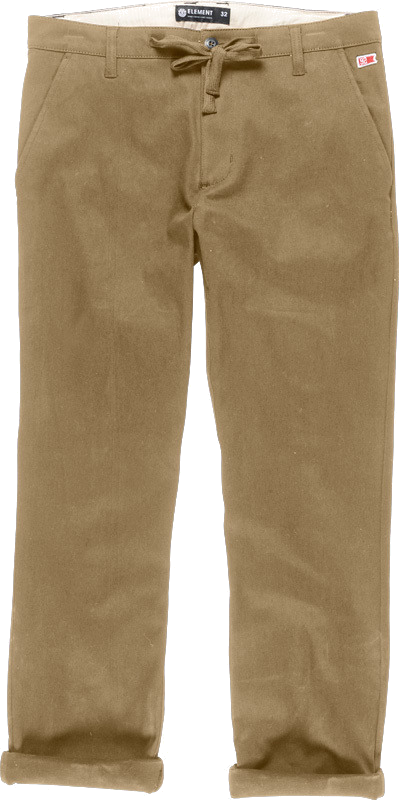

|  | 92Field Beige Le 92Field est conçu avec les points de style chino classiques que vous connaissez si bien. Conçu dans un tissu haut de gamme de coton qui a été choisi pour sa sensation confortable et des vêtements durables. Inclut des poches de côté, une arrière poche de zébrure au dos, une poche de volet au dos et une pièce de logo en cuir. |
| 65 € |
| Utilisateur 2415 |
On pourrait croire en apparence que ce chino se destine plutôt à un usage printemps-été, et pourtant ce n'est pas le cas, il est très agréable en températures basses et tient un minimum chaud. |
| Utilisateur 0045 |
J'ai hésité longtemps avant de l'acheter, et au final, un bon achat, portable n'importe quand, pluie, soleil, été, hiver, classe en toute circonstance. |